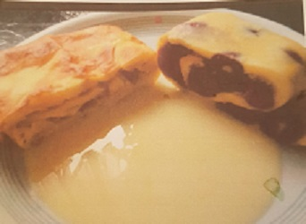

Ofenpfannkuchen
Zubereitungszeit: 10min
Kochzeit: 15min
Ergibt: 2 große Portionen

- 4 Eier
- 2EL Zucker
- 200ml Milch
- 100g Mehl
- 2EL Mineralwasser
- Kirschen oder Äpfel
- 2EL Zucker/Zimt
- Vanillesoße
- Eier und Zucker ca 5 min schaumig schlagen
- Milch unterrühren, Mehl esslöffelweise dazugeben, Wasser einrühren
- Flüssigkeit auf ein Backblech mit Backpapier gießen, mit Obst belegen.
- Bei 175°C ca. 10 min backen
- Mit Zucker un dZimt bestreuen und weitere 5 min backen
- Teig aufrollen, in Stücke schneiden und mit Vanillesoße servieren